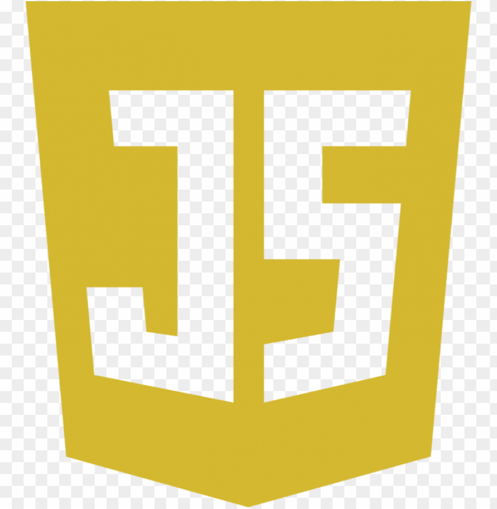
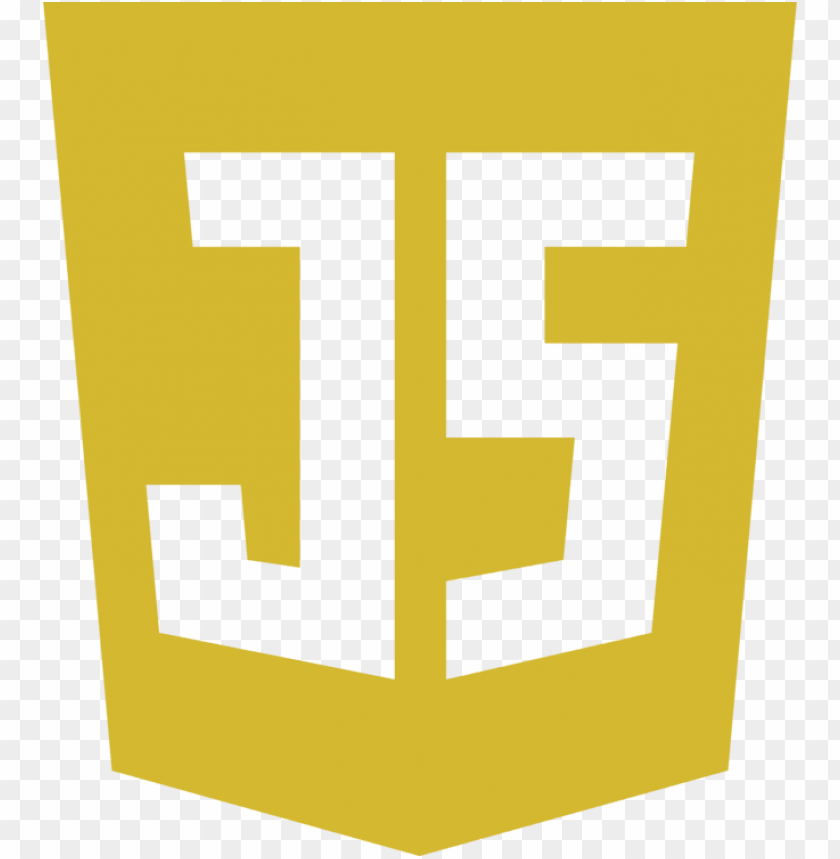

Adam G Bennett
Tucson, AZ
Skills:


 

- Back-End APIs
- Front-End React Apps
- Styling Websites using CSS.
- Adding functionality to static HTML/CSS websites and forms with Javascript.
- WordPress
- Elementor
- WooCommerce
Hello, I'm Adam, a Fullstack Developer!
I build tools to automate processes that help your business run more efficiently.
For the past four years, I have been working as a self-taught freelance web developer, specializing in JavaScript and JavaScript libraries such as jQuery, Express.js, React.js, and Node.js. Creating responsive, high-performance web applications with the MERN stack allows me to deliver end-to-end solutions that meet the diverse needs of my clients, ensuring both functionality and scalability.
Work History
Distributed AI document scanner/analyzer
Fullstack Developer
Time-Frame: 3 weeks, July. 2025
Skills/Tools Used:Express.js, Node.js, Sharp, Multer, pdf-parser, pdflib, Poppler, Docker, OCR.space, Weaviate vectorDB, OpenAI models: [text-embedding-3-small, gpt-4o, o4-mini]
This Distributed AI document scanner is an attempt to improve the
efficiency of AI scanning tools and AI response accuracy.
Presently, there is only so much context a single AI instance can
intake and accurately analyze before it starts hallucinating and
making things up.
This AI agent is an attempt to process larger documents with more
accuracy by breaking the document into more manageable pieces.
Those pieces can be fed to their own AI instance to be analyzed
individually, thereby distributing the workload to many AI.
A multiple page pdf document is uploaded and each page is parsed
out and OCR scanned to extract the text of the page. That page
text is sent to it's own AI instance to be analyzed and a
structured response returned. I chose the OpenAI model gpt-4o for
this task because it was recommended over gpt-3.5-turbo. My
thought was always to chose a cheap model for this task.
A vector array is created of the original page text, which is then
saved to the vectorDB along with the structured response. OpenAI
model text-embedding-3-small is used for this task.
I chose text-embedding-3-small because is creates 1536 dimensions
by default when creating a vector and Weaviate can be set to
expect 1536 dimensions when setting up a new collection.
A user can now perform RAG queries on the document using the more
advanced OpenAI model o4-mini.
WordPress Plugin
Fullstack Developer
Time-Frame: 2 weeks - April 2025, 2 weeks - May 2025
Skills/Tools Used:React.js, PHP, debugging skills, Chrome dev tools, Chatgpt
I wanted to setup automated lead generation on my website, but I
could only find paid plugins that would connect a form to my Brevo
account. So I built my own instead.
I created React forms that can be chosen with a case/switch
statement. The plugin's setup page is where the Brevo API key can
be saved to the WordPress database.
Multiple forms can also be set up here. The desired form can be
chosen as well as which Brevo list the contact data will be saved
to and the CTA on the submit button can be whatever the user
wants. A short-code is created for the form instance so it can be
implemented on any page.
Snag-a-Shift
Founder/CEO, Fullstack Developer
Time-Frame: Oct. 2023 - Present
Skills/Tools Used:MongoDB, Express.js, React.js, Node.js, Mongoose, Stripe, Google PlaceId API, Google Distance Matrix API, Firebase Cloud Messaging, JWT, CORS, Helmet.js, debugging skills, Chrome Devtools.
I developed a comprehensive marketing platform for the restaurant industry, from concept to beta launch. Conducted market research and developed a business plan to attract the first users and customers. I developed a calculator that reveals the hidden costs of turnover in lost productivity, and I wrote a white paper explaining my findings, including a new perspective on the relationship between wages and labor. Snag-a-Shift launched in May 2025 and is located at snag-a-shift.app.
Yellow Rose Studios
Website Design and Development with Email Marketing
Time-Frame: Feb. 2023 - Present
Skills/Tools Used:WiX, Canva, Email Marketing, Front-End Development
I am the developer for the website, which is built using the WiX platform. When I first started working on the Yellow Rose Studios website, I began by redesigning it to its current state with defined sections of the main page. I designed each section to be unique and paid special attention to choosing varying font types and sizes to aid each section's design. I continue to add updates and new features as the business requires. I also use the same principles to design and develop marketing emails for Yellow Rose Studios to send to clients. Located at yellowrosestudios.com.
LoveSetMatch
Website Development
Time-Frame: Oct. 2023 - July 2024
Skills/Tools Used:WordPress, Elementor, Astra theme, Yoast for SEO, Figma
I had the pleasure of getting matched with Phillip through CatchaFire.org to develop the LoveSetMatch.org website. I created the website using WordPress with Elementor and the Astra theme. I also used Yoast to set up SEO for the website. All of this was based on the Figma document that LoveSetMatch provided to me. I have continued to provide development support and expertise to LoveSetMatch. Located at lovesetmatch.org.
The Pullout Shelf Company
Website Design and Development
Time-Frame: June 2023 - July 2023
Skills/Tools Used:WordPress, Elementor, Astra theme, Yoast for SEO
I developed the website for the Pullout Shelf Company using WordPress with Elementor and the Astra theme. I designed the website, making sure to show off key features of their build process and before-and-after images provided by the owner.
RockStarSMS
CSS Design Development
Time-Frame: Oct. 2022 - Nov. 2022
Skills/Tools Used:CSS, Chrome developer tools, VS Code
I redesigned the dashboard theme for the RockstarSMS website to a more modern look by editing its CSS files. The dashboard is accessed by subscribers once they log in. I used Firefox developer tools to locate the .css files I needed to edit and VS Code as my editor to make the changes.
Dreaming of a Chance
SEO Website Audit
Time-Frame: June 2022
Skills/Tools Used:SemRush
I had the pleasure of getting matched with Tiffany through CatchaFire.org to assist her non-profit bird sanctuary with their SEO needs. Using Semrush, I analysed her website for improvements that could be made to improve her SERP position and created an SEO report to detail the findings.
HTML Form Enhancement
Javascript Development
Time-Frame: June. 2021 - Mar. 2022
Skills/Tools Used:HTML, CSS, Javascript, VS Code
I added my JavaScript expertise to the project and enhanced the given HTML form with functionality and expandability.
Santorini Greek Cafe
Website Design and Development with WooCommerce
Time-Frame: Oct. 2020 - April. 2021
Skills/Tools Used:WordPress, Gutenberg Blocks, Yoast Plugin for SEO, WooCommerce
I designed and developed the website using WordPress and native Gutenberg Blocks. I used WooCommerce to add all of the menu items the restaurant offers. Using Yoast, I perfected the SEO of the website and the site slowly rose to the top of the first Search Engine Results Page or SERP.